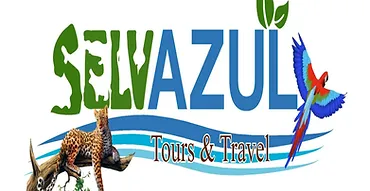

Tours Disponibles
Nichim Tours

Explora las ruinas y aprende sobre la rica historia de esta antigua ciudad maya.
Mas informacionSelvaAzul Tours

Descubre la biodiversidad de Chiapas con una caminata guiada por la selva que rodea Tonina.
Mas informacionJaguar Negro Adventure Travel

Un increible tour a la maravillosa zona arqueologica de Tonina
Mas informacionBalam Tours

En Balam Tours te aseguramos un excelente y como viaje a la increible zona arqueologica de Tonina.
Mas informacionChiapas Desconocido

Chiapas Desconocido te proporciona los mejores Tours en Chiapas.
Mas informacionViajes Maya

Descubre la biodiversidad de Chiapas con una caminata guiada por la selva que rodea Tonina.
Mas informacion